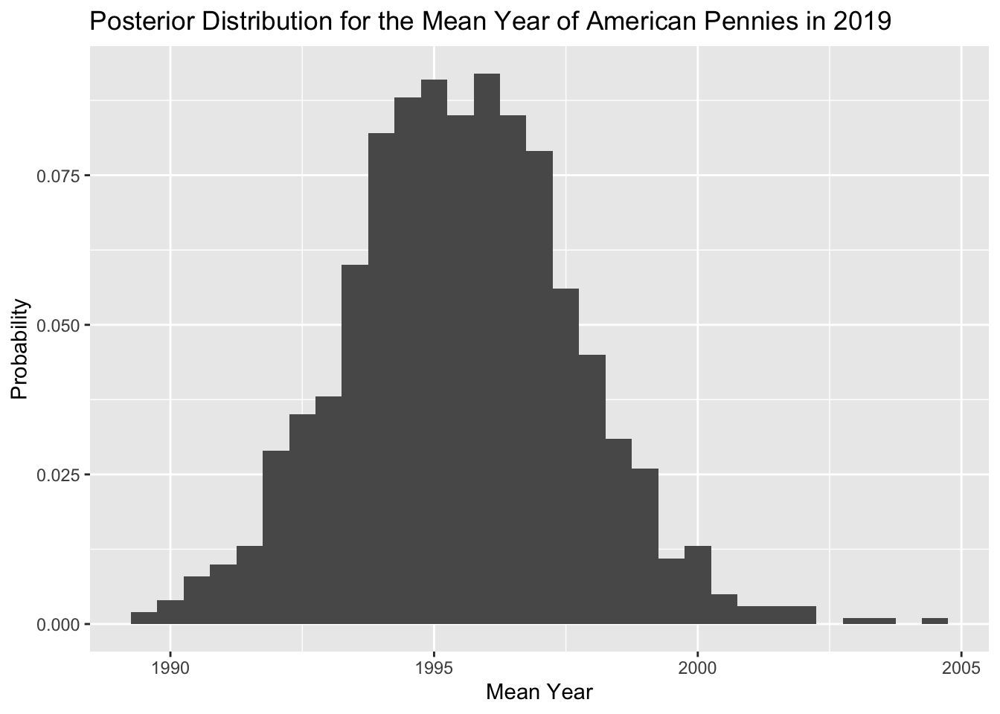
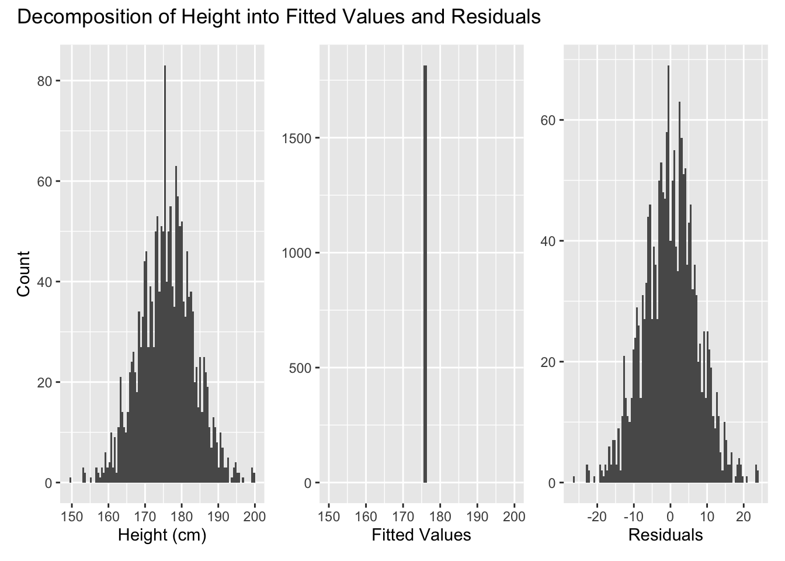
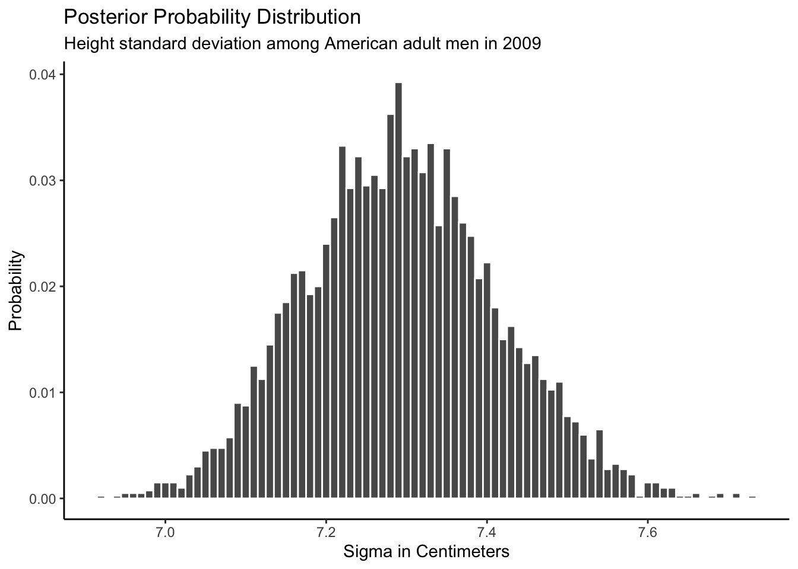
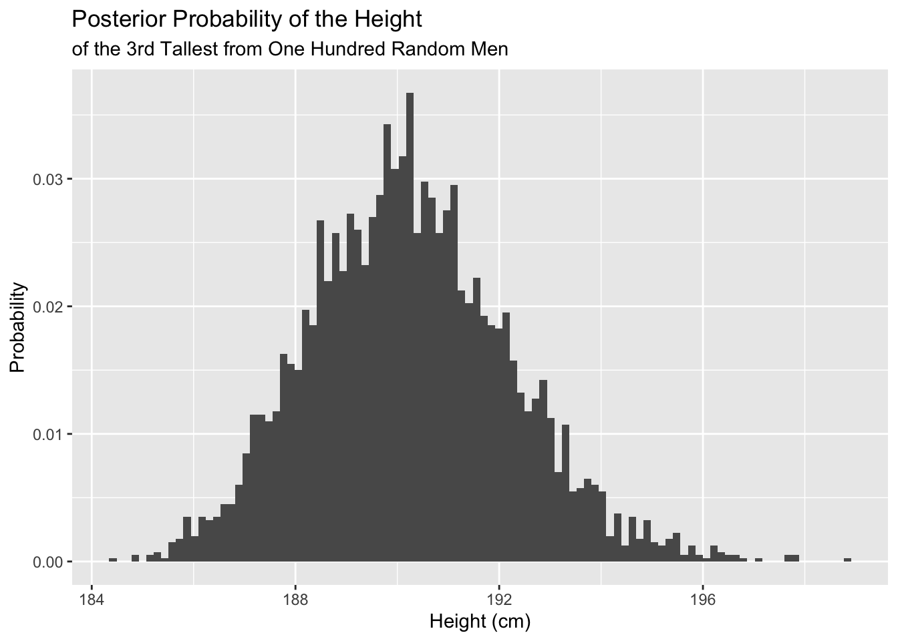

Chapter 7 Two Parameters
What is the average height of an American male? What is the 90th percentile of the distribution of height for American men? How certain are you of your estimates? If we pass 5 men walking down the street, what are the odds that the tallest will be at least 5 centimeters taller than the shortest?
7.1 Pennies example
In Chapter 6, we studied sampling. We started with a “tactile” exercise where we wanted to know the proportion of beads in the urn that are red. While we could have performed an exhaustive count, this would have been a tedious process. So instead, we used a shovel to extract a sample of 50 beads and used the resulting proportion that were red as an estimate. Furthermore, we made sure to mix the urn’s contents before every use of the shovel. Because of the randomness created by the mixing, different uses of the shovel yielded different proportions red and hence different estimates of the proportion of the urn’s beads that are red.
Remember: There is a truth here. There is an urn. It has red and white beads in it. An exact, but unknown, number of the beads are red. An exact, but unknown, number of the beads are white. An exact, but unknown, percentage of the beads are red – defined as the number red divided by the sum of the number red and the number white. Our goal was to estimate that unknown percentage. We wanted to make statements about the world, even if we can never be certain that those statements are true. We will never have the time or inclination to actually count all the balls. We use the term parameter for things that exist but which are unknown. We use statistics to estimate the true values of parameters.
We then mimicked this physical sampling exercise with an equivalent virtual sampling exercise using the computer. In Subsection 6.2.4, we repeated this sampling procedure 1,000 times, using three different virtual shovels with 25, 50, and 100 slots. We visualized these three sets of 1,000 estimates in Chapter 6 and saw that as the sample size increased, the variation in the estimates decreased. We then expanded this for all sample sizes from 1 to 100.
In doing so, we constructed sampling distributions. The motivation for taking a 1,000 repeated samples and visualizing the resulting estimates was to study how these estimates varied from one sample to another; in other words, we wanted to study the effect of sampling variation. We quantified the variation of these estimates using their standard deviation, which has a special name: the standard error. In particular, we saw that as the sample size increased from 1 to 100, the standard error decreased and thus the sampling distributions narrowed. Larger sample sizes led to more precise estimates that varied less around the center.
We then tied these sampling exercises to terminology and mathematical notation related to sampling in Subsection 6.3.1. Our study population was the large urn with \(N\) = 2,400 balls, while the population parameter, the unknown quantity of interest, was the population proportion \(p\) of the urn’s beads that were red. Since performing a census would be expensive in terms of time and energy, we instead extracted a sample of size \(n\) = 50. The point estimate, also known as a sample statistic, used to estimate \(p\) was the sample proportion \(\hat{p}\) of these 50 sampled beads that were red. Furthermore, since the sample was obtained at random, it can be considered as unbiased and as representative of the population. Thus any results based on the sample could be generalized to the population. Therefore, the proportion of the shovel’s balls that were red was a “good guess” of the proportion of the urn’s balls that are red. In other words, we used the sample to draw inferences about the population.
However, as described in Section 6.2, both the physical and virtual sampling exercises are not what one would do in real life. This was merely an activity used to study the effects of sampling variation. In a real life situation, we would not take 1,000 samples of size \(n\), but rather take a single representative sample that’s as large as possible. Additionally, we knew that the true proportion of the urn’s beads that were red was 37.5%. In a real-life situation, we will not know what this true value is. Because if we did, then why would we take a sample to estimate it?
An example of a realistic sampling situation would be a poll, like the Obama poll you saw in Section 6.4. Pollsters did not know the true proportion of all young Americans who supported President Obama in 2013, and thus they took a single sample of size \(n\) = 2,089 young Americans to estimate this value.
So how does one quantify the effects of sampling variation when you only have a single sample to work with? You cannot directly study the effects of sampling variation when you only have one sample. One common method to study this is bootstrap resampling, or simply bootstrapping.
What if we want, not only a single estimate of the unknown population parameter, but also a range of highly plausible values? Going back to the Obama poll article, it stated that the pollsters’ estimate of the proportion of all young Americans who supported President Obama was 41%. But in addition it stated that the poll’s “margin of error was plus or minus 2.1 percentage points.” This “plausible range” was [41% - 2.1%, 41% + 2.1%] = [38.9%, 43.1%]. This range of plausible values is what’s known as a confidence interval, which will be the focus of the later sections of this chapter. In Bayesian terms, we want the posterior distribution of the unknown parameter \(p\), the proportion of young Americans who supported Obama.
7.1.1 To the Bank
As we did in Chapter 6, we’ll begin with a hands-on tactile activity. We almost always need the tidyverse package.
PPBDS.data includes the data sets for this book. rsample includes functions for bootstrapping. rstanarm makes it easy to create and display Bayesian models.
7.1.2 What was the average year of US pennies in 2019?
Try to imagine all the pennies used in the United States in 2019. That’s a lot of pennies! Now, say we’re interested in the average year of minting of all these pennies. One way to compute this value would be to gather up all pennies being used in the US, record the year, and compute the average. However, this would be nearly impossible! So instead, let’s collect a sample of 50 pennies from a local bank in downtown Northampton, Massachusetts, USA as seen in the photo below.
FIGURE 7.1: Collecting a sample of 50 US pennies from a local bank.

FIGURE 7.2: Collecting a sample of 50 US pennies from a local bank.

An image of these 50 pennies can be seen below. For each of the 50 pennies starting in the top left, progressing row-by-row, and ending in the bottom right, note there is an “ID” identification variable printed in black and the year of minting printed in white.
FIGURE 7.3: 50 US pennies labelled.

Run the pennies_sample code below to create our 50 sampled pennies.
pennies_sample <- tibble(ID = c(1:50),
year = c(2002, 1986, 2017, 1988, 2008, 1983, 2008,
1996, 2004, 2000, 1994, 1995, 2015, 1978,
1974, 2015, 2016, 1996, 1983, 1971, 1981,
1976, 1998, 2017, 1979, 1979, 1993, 2006,
1988, 1978, 2013, 1976, 1979, 1985, 1985,
2015, 1962, 1999, 2015, 1990, 1992, 1997,
2018, 2015, 1997, 2017, 1982, 1988, 2006,
2017))
pennies_sample## # A tibble: 50 x 2
## ID year
## <int> <dbl>
## 1 1 2002
## 2 2 1986
## 3 3 2017
## 4 4 1988
## 5 5 2008
## 6 6 1983
## 7 7 2008
## 8 8 1996
## 9 9 2004
## 10 10 2000
## # … with 40 more rowsThe pennies_sample data frame has 50 rows corresponding to each penny with two variables. The first variable ID corresponds to the ID labels in our table above, whereas the second variable year corresponds to the year of minting saved as a numeric variable, also known as a double (dbl).
Based on these 50 sampled pennies, what can we say about all US pennies in 2019? Let’s study some properties of our sample by performing an exploratory data analysis. Let’s first visualize the distribution of the year of these 50 pennies using our data visualization tools from before. Since year is a numerical variable, we use a histogram to visualize its distribution.
FIGURE 7.4: Distribution of year on 50 US pennies.

Observe a slightly left-skewed distribution, since most pennies fall between 1980 and 2010 with only a few pennies older than 1970. What is the average year for the 50 sampled pennies? Eyeballing the histogram, it appears to be around 1990. Let’s now compute this value exactly using our data wrangling tools from Chapter 2.
## # A tibble: 1 x 1
## mean_year
## <dbl>
## 1 1995.Thus, if we’re willing to assume that pennies_sample is a representative sample from all US pennies, a “good guess” of the average year of minting of all US pennies would be 1995.44. In other words, around 1995. This should start sounding similar to what we did previously in Chapter 6!
In Chapter 6, our study population was the urn of \(N = 2400\) balls. Our population parameter was the population proportion of these balls that were red, denoted by \(p\). In order to estimate \(p\), we extracted a sample of 50 balls using the shovel. We then computed the relevant point estimate: the sample proportion of these 50 balls that were red, denoted mathematically by \(\hat{p}\). We also calculated a posterior probability distribution for \(p\).
Here, our population is \(N\) – whatever the number of pennies are being used in the US, a value which we don’t know and probably never will. The population parameter of interest is now the population mean year of all these pennies, a value denoted mathematically by the Greek letter \(\mu\), pronounced “mu”. In order to estimate \(\mu\), we went to the bank and obtained a sample of 50 pennies and computed the relevant point estimate: the sample mean year of these 50 pennies, denoted mathematically by \(\overline{x}\) (pronounced “x-bar”).
Going back to our 50 sampled pennies, the point estimate of interest is the sample mean \(\overline{x}\) of 1995.44. This quantity is an estimate of the population mean year of all US pennies \(\mu\).
Recall that we also saw in Chapter 6 that such estimates are prone to sampling variation. For example, in this particular sample, we observed three pennies with the year 1999. If we sampled another 50 pennies, would we observe exactly three pennies with the year 1999 again? More than likely not. We might observe none, one, two, or maybe even all 50! The same can be said for the other 26 unique years that are represented in our sample of 50 pennies.
So what do we do about this sampling variation? One solution is that we create bootstrap samples! Bootstrapping repeatedly draws independent samples from our data set with replacement. By sampling with replacement, the same observation can be sampled multiple times and each bootstrap sample will have the same number of observations as the original data set.
To conduct bootstraps, make sure you install both the rsample and tidyverse libraries
The intuition with bootstrapping is that we can model an inference about the population from resampling our sample data and then performing an inference about a sample from each resample. It will look something like this: resampled → sample → population.
The first thing we want to do when bootstrapping is to create our bootstrap samples. Since we are concerned with the year of pennies in 2019, let’s select year in our data set before we create our bootstraps. Let’s now perform the virtual analog for 1,000 resamples. Using these results, we’ll be able to study the variability in the sample means from 1,000 resamples of size 50. Let’s first add a times = 1000 argument to bootstraps() to indicate we would like 1,000 replicates. Remember that we must use the rsample library to use bootstraps.
set.seed(9)
virtual_resamples <- pennies_sample %>%
select(year) %>%
bootstraps(times = 1000)
virtual_resamples## # Bootstrap sampling
## # A tibble: 1,000 x 2
## splits id
## <list> <chr>
## 1 <split [50/19]> Bootstrap0001
## 2 <split [50/20]> Bootstrap0002
## 3 <split [50/16]> Bootstrap0003
## 4 <split [50/18]> Bootstrap0004
## 5 <split [50/18]> Bootstrap0005
## 6 <split [50/18]> Bootstrap0006
## 7 <split [50/17]> Bootstrap0007
## 8 <split [50/14]> Bootstrap0008
## 9 <split [50/19]> Bootstrap0009
## 10 <split [50/20]> Bootstrap0010
## # … with 990 more rowsOur bootstrap samples are stored in a tibble-like object, with each bootstrap sample nested in the splits column. Each row is a different bootstrap sample and the id column is used to identify each bootstrap sample.
It is annoying that bootstraps() requires the use of an id column even though we have used ID in the past to identify specific observations. Here, instead, it is used to mean a specific bootstrapped tibble.
To view a specific bootstrap sample, use the analysis() function from the rsample package, which basically allows you to view a specific bootstrap sample as a data frame. Consider the first bootstrap sample:
## # A tibble: 50 x 1
## year
## <dbl>
## 1 1983
## 2 2017
## 3 1983
## 4 2017
## 5 1995
## 6 1988
## 7 1978
## 8 2015
## 9 1962
## 10 1996
## # … with 40 more rowsReplace 1 with some other number to see a later bootstrap sample.
Notice that it has 50 rows, which is the same as the number of rows in our pennies_sample. Now that we know how to create bootstrap samples and view them, we can apply more code to our bootstraps to find our desired statistic, which is the average year of pennies in 2019.
In this chapter, bootstrap samples and resamples mean the same thing
To compute our desired statistics, we now create the column boot.
virtual_resamples <- pennies_sample %>%
select(year) %>%
bootstraps(times = 1000) %>%
mutate(boot = map(splits, ~ analysis(.)))
virtual_resamples## # Bootstrap sampling
## # A tibble: 1,000 x 3
## splits id boot
## <list> <chr> <list>
## 1 <split [50/19]> Bootstrap0001 <tibble [50 × 1]>
## 2 <split [50/18]> Bootstrap0002 <tibble [50 × 1]>
## 3 <split [50/20]> Bootstrap0003 <tibble [50 × 1]>
## 4 <split [50/18]> Bootstrap0004 <tibble [50 × 1]>
## 5 <split [50/19]> Bootstrap0005 <tibble [50 × 1]>
## 6 <split [50/15]> Bootstrap0006 <tibble [50 × 1]>
## 7 <split [50/13]> Bootstrap0007 <tibble [50 × 1]>
## 8 <split [50/19]> Bootstrap0008 <tibble [50 × 1]>
## 9 <split [50/20]> Bootstrap0009 <tibble [50 × 1]>
## 10 <split [50/19]> Bootstrap0010 <tibble [50 × 1]>
## # … with 990 more rowsWe are iterating over each bootstrap sample, applying analysis() to each row. boot is now a list-column in the tibble, which we can use if we want to find a specific characteristic of each sample like the average year. Given that boot is a list column and we want to pull out the mean year as we are interested in this, we can create two more columns:
set.seed(9)
virtual_resamples <- pennies_sample %>%
select(year) %>%
bootstraps(times = 1000) %>%
mutate(boot = map(splits, ~ analysis(.))) %>%
mutate(years = map(boot, ~ pull(., year))) %>%
mutate(year_mean = map_dbl(years, ~ mean(.)))
virtual_resamples## # Bootstrap sampling
## # A tibble: 1,000 x 5
## splits id boot years year_mean
## <list> <chr> <list> <list> <dbl>
## 1 <split [50/19]> Bootstrap0001 <tibble [50 × 1]> <dbl [50]> 1992.
## 2 <split [50/20]> Bootstrap0002 <tibble [50 × 1]> <dbl [50]> 1999.
## 3 <split [50/16]> Bootstrap0003 <tibble [50 × 1]> <dbl [50]> 1992.
## 4 <split [50/18]> Bootstrap0004 <tibble [50 × 1]> <dbl [50]> 1993.
## 5 <split [50/18]> Bootstrap0005 <tibble [50 × 1]> <dbl [50]> 1995.
## 6 <split [50/18]> Bootstrap0006 <tibble [50 × 1]> <dbl [50]> 1998.
## 7 <split [50/17]> Bootstrap0007 <tibble [50 × 1]> <dbl [50]> 1993.
## 8 <split [50/14]> Bootstrap0008 <tibble [50 × 1]> <dbl [50]> 1995.
## 9 <split [50/19]> Bootstrap0009 <tibble [50 × 1]> <dbl [50]> 1993.
## 10 <split [50/20]> Bootstrap0010 <tibble [50 × 1]> <dbl [50]> 2000.
## # … with 990 more rowsVoila! We were able to create a thousand bootstrap samples and calculate the mean year for each resample. Let’s now create a plot to visualizes the posterior distribution for the mean year of American pennies in 2019.
virtual_resamples %>%
ggplot() +
geom_histogram(aes(x = year_mean,
y = after_stat(count/sum(count))),
binwidth = .5) +
labs(x = "Mean Year",
y = "Probability",
title = "Posterior Distribution for the Mean Year of American Pennies in 2019") 
How did we sneak in the word “posterior” into this discussion? Recall in Chapter 5 that we defined a posterior distribution as our beliefs about an unknown number: either a number which we don’t know now but which we will know, like Biden’s electoral vote total or a number which we can never know, like the average year for all pennies. In the case of the bootstrap samples we made, the posterior distribution represents our beliefs about \(\mu\), the mean year of American pennies in 2019 after taking into account the information from our bootstrap sample means. As demonstrated in the plot above, we can see that \(\mu\) — an unknown parameter, the true value of which we will never know — is most likely between 1992 and 1998.
Have we proved how the bootstrap, almost magically, can create a reasonable posterior? Not at all! The mathematics of that proof are beyond the scope of this book.
7.2 EDA for nhanes
Shifting away from dealing with pennies, let’s look at bootstrap modeling with the nhanes dataset from National Health and Nutrition Examination Survey conducted by the Centers for Disease Control and Prevention and covering children and adults in America. It is located in the PPBDS.data package which we loaded above.
## Rows: 10,000
## Columns: 15
## $ survey <int> 2009, 2009, 2009, 2009, 2009, 2009, 2009, 2009, 2009, …
## $ gender <chr> "Male", "Male", "Male", "Male", "Female", "Male", "Mal…
## $ age <int> 34, 34, 34, 4, 49, 9, 8, 45, 45, 45, 66, 58, 54, 10, 5…
## $ race <chr> "White", "White", "White", "Other", "White", "White", …
## $ education <ord> High School, High School, High School, NA, Some Colleg…
## $ hh_income <ord> 25000-34999, 25000-34999, 25000-34999, 20000-24999, 35…
## $ weight <dbl> 87, 87, 87, 17, 87, 30, 35, 76, 76, 76, 68, 78, 75, 39…
## $ height <dbl> 165, 165, 165, 105, 168, 133, 131, 167, 167, 167, 170,…
## $ bmi <dbl> 32, 32, 32, 15, 31, 17, 21, 27, 27, 27, 24, 24, 26, 19…
## $ pulse <int> 70, 70, 70, NA, 86, 82, 72, 62, 62, 62, 60, 62, 76, 80…
## $ diabetes <int> 0, 0, 0, 0, 0, 0, 0, 0, 0, 0, 0, 0, 0, 0, 0, 0, 0, 0, …
## $ general_health <int> 3, 3, 3, NA, 3, NA, NA, 4, 4, 4, 4, 4, 2, NA, NA, 3, N…
## $ depressed <ord> Several, Several, Several, NA, Several, NA, NA, None, …
## $ pregnancies <int> NA, NA, NA, NA, 2, NA, NA, 1, 1, 1, NA, NA, NA, NA, NA…
## $ sleep <int> 4, 4, 4, NA, 8, NA, NA, 8, 8, 8, 7, 5, 4, NA, 5, 7, NA…nhanes has data on a diverse array of things like physical attributes, education, and sleep. Let’s restrict our attention to a subset, focusing on gender, height and the year of the survey.
Look at a random sample of our data:
## # A tibble: 5 x 4
## age gender height survey
## <int> <chr> <dbl> <int>
## 1 80 Female 157. 2009
## 2 0 Female NA 2009
## 3 19 Female 161. 2011
## 4 39 Male 175 2009
## 5 24 Female 159. 2009Notice how there is a decimal in the height column of ch7. This is because height is a <dbl> and not an <int>.
Let’s also run glimpse() on our new data.
## Rows: 10,000
## Columns: 4
## $ age <int> 34, 34, 34, 4, 49, 9, 8, 45, 45, 45, 66, 58, 54, 10, 58, 50, 9…
## $ gender <chr> "Male", "Male", "Male", "Male", "Female", "Male", "Male", "Fem…
## $ height <dbl> 165, 165, 165, 105, 168, 133, 131, 167, 167, 167, 170, 182, 16…
## $ survey <int> 2009, 2009, 2009, 2009, 2009, 2009, 2009, 2009, 2009, 2009, 20…Be on the lookout for anything suspicious. Are there any NA’s in your data set? What types of data are the columns, i.e. why is survey characterized as integer instead of double? Was most of the data collected in 2009? Are there more females than males? You can never look at your data too closely.
In addition to glimpse(), we can run skim(), from the skimr package, to calculate some summary statistics.
TABLE 7.1: Data summary
| Name | Piped data |
| Number of rows | 10000 |
| Number of columns | 4 |
| _______________________ | |
| Column type frequency: | |
| character | 1 |
| numeric | 3 |
| ________________________ | |
| Group variables | None |
Variable type: character
| skim_variable | n_missing | complete_rate | min | max | empty | n_unique | whitespace |
|---|---|---|---|---|---|---|---|
| gender | 0 | 1 | 4 | 6 | 0 | 2 | 0 |
Variable type: numeric
| skim_variable | n_missing | complete_rate | mean | sd | p0 | p25 | p50 | p75 | p100 | hist |
|---|---|---|---|---|---|---|---|---|---|---|
| age | 0 | 1.00 | 37 | 22 | 0 | 17 | 36 | 54 | 80 | ▇▇▇▆▅ |
| height | 353 | 0.96 | 162 | 20 | 84 | 157 | 166 | 174 | 200 | ▁▁▁▇▂ |
| survey | 0 | 1.00 | 2010 | 1 | 2009 | 2009 | 2010 | 2011 | 2011 | ▇▁▁▁▇ |
Interesting! There are 353 missing values of height in our subset of data. Just using glimpse() does not show us that. Let’s filter out the NA’s using drop_na. This we will delete the rows in which the value of any variable is missing. For simplicity, let’s only consider adults.
Plot your data. geom_density() is a smooth version of geom_histogram(). With geom_density(), the y-axis is scaled so that the area under the curve equals 1.
ch7 %>%
ggplot(aes(x = height, color = gender)) +
geom_density() +
labs(x = "Height",
title = "Height by Gender in NHANES Dataset")We can see the the most probable heights for both genders and that men are generally taller than women.
7.3 Bootstrap to estimate average height
We have shown you how to use bootstrap sampling to create a posterior distribution for an unknown parameter. Let’s use a similar approach to estimate the value of a different unknown parameter: the average height of an adult American male in 2009. Let’s also name this parameter \(\mu\). Is it confusing that we are using the same parameter? Yes! But, sadly, there are only so many Greek letters. We have no choice but to reuse them. By convention, \(\mu\) is often used as the parameter name for an unknown mean. But we could have used a different letter, Greek or otherwise. And, symbols besides \(\mu\) are often used for unknown means. It is up to you, but, in general, following the conventions in your field is wise.
First, filter the data set:
ch7_male <- nhanes %>%
filter(survey == 2009, gender == "Male", age >= 18) %>%
select(height) %>%
drop_na()Dropping missing values can be dangerous, depending on their origin and the goals of our analysis. Never drop lightly.
Second, use (almost) the same code as before:
set.seed(9)
virtual_resamples <- ch7_male %>%
bootstraps(times = 1000) %>%
mutate(boot = map(splits, ~ analysis(.))) %>%
mutate(heights = map(boot, ~ pull(., height))) %>%
mutate(height_mean = map_dbl(heights, ~ mean(.)))
virtual_resamples## # Bootstrap sampling
## # A tibble: 1,000 x 5
## splits id boot heights height_mean
## <list> <chr> <list> <list> <dbl>
## 1 <split [1.8K/663]> Bootstrap0001 <tibble [1,814 × 1… <dbl [1,814… 176.
## 2 <split [1.8K/640]> Bootstrap0002 <tibble [1,814 × 1… <dbl [1,814… 176.
## 3 <split [1.8K/662]> Bootstrap0003 <tibble [1,814 × 1… <dbl [1,814… 176.
## 4 <split [1.8K/649]> Bootstrap0004 <tibble [1,814 × 1… <dbl [1,814… 176.
## 5 <split [1.8K/669]> Bootstrap0005 <tibble [1,814 × 1… <dbl [1,814… 176.
## 6 <split [1.8K/660]> Bootstrap0006 <tibble [1,814 × 1… <dbl [1,814… 176.
## 7 <split [1.8K/661]> Bootstrap0007 <tibble [1,814 × 1… <dbl [1,814… 176.
## 8 <split [1.8K/641]> Bootstrap0008 <tibble [1,814 × 1… <dbl [1,814… 176.
## 9 <split [1.8K/647]> Bootstrap0009 <tibble [1,814 × 1… <dbl [1,814… 176.
## 10 <split [1.8K/657]> Bootstrap0010 <tibble [1,814 × 1… <dbl [1,814… 176.
## # … with 990 more rowsPlot the results:
virtual_resamples %>%
ggplot() +
geom_histogram(aes(x = height_mean,
y = after_stat(count/sum(count))),
binwidth = 0.02) +
labs(x = "Mean Height",
y = "Probability",
title = "Posterior Distribution for the Mean Height of American Males in 2009") 
The posterior distribution includes all the information we have about the unknown parameter — mean height of American males — which we have used our data to estimate. But we don’t always want the entire object. Instead, we might want to know the:
Mean: 175.97
Median: 175.97
95% confidence interval: 175.66, 176.28
We use the quantile() function to calculate the confidence interval. Note that, in this book, we use the Bayesian interpretation of a confidence interval. There is a truth out there. The average height in our population is a specific number. We don’t know what that number is. But we are 95% sure that it lies within the 95% confidence interval.
7.4 Probability to bootstrap to Bayesian models
In this sense, the bootstrap distribution represents an (approximate) nonparametric, noninformative posterior distribution for our parameter. But this bootstrap distribution is obtained painlessly — without having to formally specify a prior and without having to sample from the posterior distribution. Hence we might think of the bootstrap distribution as a “poor man’s” Bayes posterior. By perturbing the data, the bootstrap approximates the Bayesian effect of perturbing the parameters, and is typically much simpler to carry out. — Elements of Statistical Learning, 2nd edition, by Hastie et al, page 271.
Most textbooks would, at this stage, provide a more mathematical explanation of the transition we are making from Chapter 5 to this chapter. In both Chapters 5 and 6 we dealt with a discrete set of possible models. We began with examples in which there were only two or three possible “true” states of the world. You were either infected or not infected. There were either zero, one or two white marbles in the bag. These examples grew more and more complex, both by increasing the number of models under consideration and by increasing the number of possible outcomes of the experiment. In the case of the urn, there were 2,401 possible models: either zero or one or two or . . . 2,400 red beads in the urn.
The transition from a discrete set of possible models to an infinite set of possible models is mathematically complex but easy on the intuition. Just wave you hands, imagine lots more models, and invoke the aesthetic appeal of smoothness. In the case of height, there are an infinite number of possible models: average height of adult American men in 2009 could be 175, 175.1, 175.14, 175.148, 175.1482, and so on. There are an infinite number of possible values since height is continuous. Yet, almost miraculously, the same intuition applies.
Let’s use \(\mu\) as the parameter for the unknown average height of all the adult men in America in 2009. This is exactly analogous to the parameter \(p\) from Chapter 6, the proportion of red beans in the urn. The only difference is that there are an infinite number of values which \(\mu\) might take. We restricted \(p\) to only 2,401 possible values: \(0\), \(1/2400\), \(2/2400\), …, \(2399/2400\), \(1\).
Although a bootstrap can create a posterior distribution, as above, there are much simpler ways to do so. The most common involves the function stan_glm() from the rstanarm library. Halfway through the book, we are now ready for our first full scale data science project. Let us be guided by the cardinal virtues.
7.5 Cardinal Virtues
Data science is ultimately a moral act, so we will use the four Cardinal Virtues — Wisdom, Justice, Courage and Temperance — to organize our approach. The purpose of this section is two-fold. First, we will show you that a more formal Bayesian approach results in, more or less, the same answer as the bootstrap above, but with much less code. Second, we will show how the Cardinal Virtues guide good data science.
7.5.1 Wisdom

What decision do we face? The reason for making models is not, primarily that making models is fun, although it is! The reason is that we face a decision. We must decide between X or Y. We must choose from A, B or C. We must set D to a specific numeric value. Given that decision, we should make a model of the world to help us.
In any textbook, it will be tough to avoid the “toy problem” trap. The real world is complex. Any substantive decision problem includes a great deal of complexity and requires a great deal of context. We do not have the time to get into that level of detail. So, we simplify. We are going to create a model of height for adult men. We will then use that model to answer three questions:
What is the probability that the next adult male we meet will be taller than 180 centimeters?
What is the probability that, among the next 4 men we meet, the tallest is at least 10 cm taller than the shortest?
What is our posterior probability distribution for the height of the 3rd tallest man out of the next 100 we meet?
The first two questions have a single number, a single probability, as their answer. The third question requires a full scale posterior probability distribution.
But before starting that process, we need to check that the data we have — which is only for a sample of adult American men in 2009 — will allow us to answer these questions, however roughly.
That is where Wisdom comes in. In the social sciences, there is never a perfect relationship between the data you have and the question you are trying to answer. Data for American males in 2009 is not the same thing as data for American males today. Nor is it the same as the data for men in France or Mexico. Moreover, the problem hasn’t specified where on Earth we are, nor who we are near. Walking near a basketball tournament will generate different answers than walking around Times Square.
Yet, this data is relevant. Right? It is certainly better than nothing. That is, using not-perfect data is better than using no data at all.
Is not-perfect data always better? No! If your problem is estimating the median height of 5th grade girls in Toyko, we doubt that our data is at all relevant. Wisdom recognizes the danger of using non-relevant data to build a model and then mistakenly using that model in a way which will only make the situation worse. If the data won’t help, don’t use the data, don’t build a model. Better to just use your common sense and experience. Or find better data.
The other aspect of Wisdom is ethics. Just because we can make a model does not mean we should make that model. Models can be used for evil and, if at all possible, we should do no evil. Fortunately, it is hard to generate many ethical worries about height models. If, instead, we were modeling criminality, the ethics become much more complex . . .
7.5.2 Justice

Mathematical knowledge is the least important skill for a data scientist.
However, a little mathematical notation will make our modeling assumptions clear, will bring some precision to our approach. In this case:
\[ y_i = \mu + \epsilon_i \] with \(\epsilon_i \sim N(0, \sigma^2)\). \(y_i\) is the height of male \(i\). \(\mu\) is the average height of all males in the population. \(\epsilon_i\) is the “error term,” the difference between the height of male \(i\) and the average height of all males. \(\epsilon_i\) is normally distributed with a mean of 0 and a standard deviation of \(\sigma\).
This is the simplest model we can construct. Note:
- The model has two unknown parameters: \(\mu\) and \(\sigma\). Before we can do anything else we need to estimate the values of these parameters. Can we ever know their exact value? No! Perfection lies only in God’s own R code. But, by using a Bayesian approach similar to what we used in Chapters 5 and 6, we will be able to create posterior probability distributions for each parameter.
The model is wrong, as are all models.
The parameter we most care about is \(\mu\). That is the parameter with a substantively meaningful interpretation. Not only is the meaning of \(\sigma\) difficult to describe, we also don’t particular care about its value. Parameters like \(\sigma\) in this context are nuisance or auxiliary parameters. We still have to estimate their posterior distributions, but we don’t really care what those posteriors look like.
\(\mu\) is not the average height of the men in the sample. We can calculate that directly. It is 175.97. No estimation required! Instead, \(\mu\) is the average height of men in the population. Recall from the discussions in Chapter 6 that the population is the universe of people/units/whatever about which we seek to draw conclusions. On some level, this seems simple. On a deeper level, it is very subtle. For example, if we are walking around Copenhagen, then the population we really care about, in order to answer our three questions, is the set of adult men into which we might run today. This is not the same as the population of adult men in the US in 2009. But is it close enough? Is it better than nothing? Each case is a different and the details matter.
Consider:
\[outcome = model + what\ is\ not\ in\ the\ model\] In this case, the outcome is the height of an individual male. This, also called the “response,” is what we are trying to understand and/or explain and/or predict. The model is our creation, a mixture of data and parameters, an attempt to capture the underlying structure in the world which generates the outcome.
What is the difference between the outcome and the model? By definition, it is what is not in the model, all the blooming and buzzing complexity of the real world. The model will always be incomplete in that it won’t capture everything. Whatever the model misses is thrown into the error term.
The Preceptor Table for this problem is almost identical to the one we saw in Chapter 3:
| ID | Outcome |
|---|---|
| Heights (cm) | |
| 1 | ? |
| 2 | ? |
| ... | ... |
| 473 | 172 |
| 474 | ? |
| ... | ... |
| 3,258 | ? |
| 3,259 | 162 |
| ... | ... |
| N | ? |
Since this is not a causal model, there is only one potential outcome — which is to say, only one outcome: an individual’s height.
7.5.3 Courage

In data science, we deal with math, words, and code, but the most important of these is code. We need Courage to create the model, to take the leap of faith that we can make our ideas real.
7.5.3.1 stan_glm
Bayesian models are not hard to create in R. Sticking to the same filtered adult male 2009 data, we can reduce all the work we did for the bootstrap approach to the stan_glm() function which, when fed the correct inputs, creates a Bayesian generalized linear model of height. This function comes from the rstanarm package, which is very useful for Bayesian models in general.
The first argument in the stan_glm() function is data, which in our case is the filtered ch7_male tibble we used in the bootstrap example. The only other mandatory argument is the formula that we want to build a model around. In this case, since we have no predictor variables, our equation will be height ~ 1.
Details:
This may take time. Bayesian models, especially ones with large amounts of data, can take longer than we might like. Indeed, computational limits were the main reason why Bayesian approaches were — and, to some extent, still are — little used. When creating your own models, you will often want to use the
cache = TRUEcode chunk option. This saves the result of the model so that you don’t recalculate it every time you knit.The
dataargument, like all such usage in R, is used for the input data for the model.If you don’t set
refresh = 0, the model will puke out many lines of confusing output. You can learn more about that output by reading the help page forstan_glm(). The output provides details on the fitting process as it runs as well as diagnostics about the final result. All of those details are beyond the scope of this book.You should always assign the result of the call of
stan_glm()to an object, as we do above. By convention, the name of that object will often included the word “fit” to indicate that it is a fitted model object.There is a direct connection between the mathematical form of the model created under Justice and the code we use to fit the model under Courage.
height ~ 1is the code equivalent of \(y_i = \mu\).The default value for
familyisgaussian(), so we did not need to include it in the call above. From the Justice section, the assumption that \(\epsilon_i \sim N(0, \sigma^2)\) is equivalent to usinggaussian(). If \(\epsilon_i\) has a different distribution, we would need to use a differentfamily.
7.5.3.1.1 Printed model
There are several ways to examine the fitted model. The simplest is to print it:
## stan_glm
## family: gaussian [identity]
## formula: height ~ 1
## observations: 1814
## predictors: 1
## ------
## Median MAD_SD
## (Intercept) 176.0 0.2
##
## Auxiliary parameter(s):
## Median MAD_SD
## sigma 7.3 0.1
##
## ------
## * For help interpreting the printed output see ?print.stanreg
## * For info on the priors used see ?prior_summary.stanregThe first line is telling us which model we used, in our case a stan_glm().
The second line tells us this model is using a Gaussian, or normal, distribution. We discussed this distribution in Section 2.9.3. The normal is a probability distribution that is symmetric about the mean and unimodal. For that reason, we typically leave it as the default unless we are working with a lefthand variable that is extremely non-normal, e.g., something which only takes two values like 0/1 or TRUE/FALSE. Since height is (very roughly) normally distributed, the Gaussian distribution is a good choice.
The third line gives us back the formula we provided. We are creating a model predicting height with a constant — which is just about the simplest model you can create. Formulas in R are constructed in two parts. First, on the left side of the tilde (the “~” symbol) is the “response” or “dependent” variable, the thing which we are trying to explain. Since this is a model about height, height goes on the lefthand side. Second, we have the “explanatory” or “independent” variables on the righthand side of the tilde. There will often be many such variables but in this, the simplest possible model, there is only one, a single constant. (The number 1 indicates that constant. It does not mean that we think that everyone is height 1.)
The fourth and fifth lines of the output tell us that we have 1814 observations and that we only have one predictor (the constant). Again, the terminology is a bit confusing. What does it mean to suggest that \(\mu\) is “constant?” It means that, although \(\mu\)’s value is unknown, it is fixed. It does not change from person to person. The 1 in the formula corresponds to the parameter \(\mu\) in our mathematical definition of the model.
We knew all this information before we fit the model. R records it in the fit_obj because we don’t want to forget what we did. The second half of the display gives a summary of the parameter values.
We see the output for the two parameters of the model: intercept and sigma. This can be confusing! Recall that the thing we care most about is \(\mu\), the average height in the population. If we had the ideal Preceptor Table — with a row for every adult male in the population we care about and no missing data — \(\mu\) would be trivial to calculate, and with no uncertainty. But only we know that we named that parameter \(\mu\). All that R sees is the 1 in the formula. In most fields of statistics, this constant term is called the “intercept.” So, now we have three things — \(\mu\) (from the math), 1 (from the code), and “intercept” (from the output) — all of which refer to the exact same concept. This will not be the last time that terminology will be confusing.
At this point, stan_glm() — or rather the print() method for rstan objects — has a problem. We have full posteriors for both \(\mu\) and \(\sigma\). But this is a simple printed summary. We can’t show the entire distribution. So, what are the best few numbers to provide? There is no right answer to this question! Here, the choice is to provide the median of the posterior and the “MAD_SD.”
Anytime you have a distribution, whether posterior probability or otherwise, the most important single number associated with it is some measure of its location. Where is the data? The two most common choices for this measure are the mean and median. We use the median here because posterior distributions can often be quite skewed, making the mean a less stable measure.
The second most important number for summarizing a distribution concerns its spread. How far is the data spread around its center? The most common measure used for this is the standard deviation. MAD SD, the scaled standard deviations of the absolute difference between each observation and the median of all observations, is another. If the variable has a normal distribution, then the standard deviation and the MAD SD will be very similar. But the MAD SD is much more robust to outliers, which is why it is used here.
Instead of printing the whole model, we can just print out the parameter values:
## Median MAD_SD
## (Intercept) 176.0 0.2
##
## Auxiliary parameter(s):
## Median MAD_SD
## sigma 7.3 0.1Now that we understand the meaning of Median and MAD_SD in the above display, we can interpret the actual numbers. The median of the intercept, 175.98, is the median of our posterior distribution for \(\mu\), the average height of all American men in 2009. The median of sigma, 7.29, is the median of our posterior distribution for the true \(\sigma\), which can be roughly understood as the variability in the height of men, once we account for our estimate of \(\mu\).
The MAD_SD for each parameter is a measure of the variability of our posterior distributions. How spread out are they? Speaking roughly, 95% of the mass of a posterior distribution is located within +/- 2 MAD SDs from the median. For example, we would be about 95% confident that the true value of \(\mu\) is somewhere between 175.6 and 176.3.
7.5.3.1.2 Plotting the posterior distributions
Instead of doing this math in our heads, we can display both posterior distributions. Pictures speak where math mumbles. Fortunately, getting draws from those posteriors is easy:
## # A tibble: 4,000 x 2
## `(Intercept)` sigma
## <dbl> <dbl>
## 1 176. 7.10
## 2 176. 7.39
## 3 176. 7.20
## 4 176. 7.28
## 5 176. 7.19
## 6 176. 7.43
## 7 176. 7.22
## 8 176. 7.32
## 9 176. 7.38
## 10 176. 7.28
## # … with 3,990 more rowsThese 4,000 rows are “draws” from the estimated posteriors, each in its own column. These are like the vectors which result from calling functions like rnorm() or rbinom(). We can create the plot in a similar way:
fit_obj %>%
as_tibble() %>%
rename(mu = `(Intercept)`) %>%
ggplot(aes(x = mu)) +
geom_histogram(aes(y = after_stat(count/sum(count))),
bins = 100) +
labs(title = "Posterior Probability Distribution",
subtitle = "Average height among American adult men in 2009",
x = "Height in Centimeters",
y = "Probability") +
theme_classic()
Although it is possible to have variable names like “(Intercept)”, it is not recommended. Avoid weird names! When you are stuck with them, place them in backticks. Even better, rename them, as we do above.
fit_obj %>%
as_tibble() %>%
ggplot(aes(x = sigma)) +
geom_histogram(aes(y = after_stat(count/sum(count))), binwidth = 0.01,
color = "white") +
labs(title = "Posterior Probability Distribution",
subtitle = "Height standard deviation among American adult men in 2009",
x = "Sigma in Centimeters",
y = "Probability") +
theme_classic()
Again, \(\sigma\) is usually a nuisance parameter. We don’t really care what its value us, so we rarely plot it.
7.5.3.2 Decomposing the outcome
Two other important concepts in model creation are “fitted” values and residuals.
ch7_male %>%
mutate(fitted_value = fitted(fit_obj)) %>%
mutate(residual = residuals(fit_obj)) %>%
sample_n(5)## # A tibble: 5 x 3
## height fitted_value residual
## <dbl> <dbl> <dbl>
## 1 179. 176. 2.92
## 2 191. 176. 14.7
## 3 172. 176. -3.48
## 4 168. 176. -8.08
## 5 164. 176. -12.1The fitted value represents the model’s best guess at to what the true value of the outcome should be for that individual, given information about any covariates. This is a tricky concept since, after all, we already know what the actual value is. The residual is the difference between the outcome and the fitted value. These definitions lead to a natural decomposition of the outcome data:

7.5.4 Temperance

Recall that a “matrix” in R is a rectangular array of data, shaped like a data frame or tibble, but containing only one type of data, e.g., numeric. Large matrices also print out ugly. (There are other differences, none of which we care about here.) Example:
## [,1] [,2]
## [1,] 3 9
## [2,] 4 12
## [3,] 8 13The easiest way to pull information from a matrix is to use [], the subset operator. Here is how we grab the second column of m:
## [1] 9 12 13Note how matrices with just one dimension “collapse” into single vectors. Tibbles, on the other hand, always maintain their rectangular shapes, even with only one column or row. Matrices are important because posterior_predict() and other functions from rstanarm return matrices.
We have a model. What can we do with it? Let’s answer the three questions with which we started this section.
- What is the probability that the next adult male we meet will be taller than 180 centimeters?
We have a model of American male height from 2009, fit_obj, which we can use for this purpose.
Unfortunately, posterior_predict() returns a weird object with class “ppd”, which stands for posterior probability distribution. There are some advanced use cases in which this is a useful class of object to work with. But, for the purposes of this book, the “ppd” class is too complex. So, whenever we call posterior_predict(), we will always transform it into a tibble like so:
Doing so requires two steps. First, use as_tibble(), just as you might expect. In R, we often transform one thing into another thing with functions which begin with as_. Unfortunately, that does not solve our problem because each column is still of class ppd. So, second, we use the mutate_all(as.numeric) incantation to transform each column. The resulting object, pp, is still not easy to work with, both because the variable names are all numbers and because of how big it is.
## [1] 4000 1814There are 4000 rows because, by default, stan_glm() gives us 4000 draws from the posterior distribution, both for the distribution of the parameters (which we looked at above under Courage) and for the predicted values. There
are 1814 because the matrix provides draws from the same posterior predictive distribution for each of the input data rows. (In this case, they are all the same — all draws from the same posterior predictive distribution — because the model does not use any covariates. In more complex models, the columns in the pp tibble can be draws from very different distributions.)
Why do we want a posterior prediction for each observation? After all, we already know the value for each observation! We know everyone’s height in our data set. No prediction is necessary.
The reason is that, in order to confirm that our model is consistent with the data, we should compare the posterior probability distribution for each observation to the actual value for that observation. They should be consistent. That is, if the model is sensible, about 95% of the true observations should lie within the 95% confidence interval of their respective posterior probability distributions. The process of doing this comparison is a posterior predictive check.
In the meantime, we can still use any column in pp to answer our question. (We will use the first column for convenience.) Consider:
## # A tibble: 4,000 x 2
## pred gt_180
## <dbl> <lgl>
## 1 172. FALSE
## 2 191. TRUE
## 3 166. FALSE
## 4 169. FALSE
## 5 178. FALSE
## 6 164. FALSE
## 7 172. FALSE
## 8 185. TRUE
## 9 173. FALSE
## 10 183. TRUE
## # … with 3,990 more rowsWe don’t have to put the posterior predictions in a tibble, but doing so makes everything easier. What are the odds that the next adult male will be taller than 180 centimeters?
tibble(pred = pp$`1`) %>%
mutate(gt_180 = ifelse(pred > 180, TRUE, FALSE)) %>%
summarize(answer = sum(gt_180) / n())## # A tibble: 1 x 1
## answer
## <dbl>
## 1 0.290Somewhere around 29% or so.
Again, the key difficulty is the population. The problem we actually have involves walking around London, or wherever, today. The data we have involve America in 2009. Those are not the same things! But they are not totally different. Knowing whether the data we have is “close enough” to the problem we want to solve is at the heart of Wisdom. Yet that was the decision we made at the start of the process, the decision to create a model in the first place. Now that we have created a model, we look to the virtue of Temperance for guidance in using that model. The data we have is never a perfect match for the world we face. We need to temper our confidence and act with humility. Our forecasts will never be as good as a naive use of the model might suggest. Reality will surprise us. We need to take the model’s claims with a family-sized portion of salt.
- What is the probability that, among the next 4 men we meet, the tallest is at least 10 cm taller than the shortest?
Bayesian models are beautiful because, via the magic of simulation, we can answer (almost!) any question. With simulation, we just need to answer this step by step.
tibble(pred_1 = pp$`1`,
pred_2 = pp$`2`,
pred_3 = pp$`3`,
pred_4 = pp$`4`) %>%
rowwise() %>%
mutate(tallest = max(c_across(pred_1:pred_4))) %>%
mutate(shortest = min(c_across(pred_1:pred_4))) %>%
mutate(diff = tallest - shortest) %>%
mutate(gt_10 = ifelse(diff >= 10, TRUE, FALSE)) %>%
ungroup() %>%
summarize(answer = sum(gt_10) / n())## # A tibble: 1 x 1
## answer
## <dbl>
## 1 0.758There is about a 75% chance that, when meeting 4 random men, the tallest will be at least 10 cm taller than the shortest.
- What is our posterior probability of the height of the 3rd tallest man out of the next 100 we meet?
The same approach will work for almost any question.
pp[, 1:100] %>%
rowwise() %>%
mutate(third_tallest = sort(c_across(`1`:`100`), decreasing = TRUE)[3]) %>%
ungroup() %>%
ggplot(aes(x = third_tallest, y = after_stat(count / sum(count)))) +
geom_histogram(bins = 100) +
labs(title = "Posterior Probability of the Height",
subtitle = "of the 3rd Tallest from One Hundred Random Men",
x = "Height (cm)",
y = "Probability")
7.6 Conclusion
The next five chapters will follow the same process we have just completed here. We start with a decision we have to make. With luck, we will have some data to guide us. (Without data, even the best data scientist will struggle to make progress.) Wisdom asks us: “Is the data we have close enough to the decision we face to make using that data likely to be helpful?” Often times, the answer is “No.” Even if we do have data, and the ability to make a model, Wisdom will tap us on the shoulder and say, “Even if you can make a model, don’t forget to ask yourself if you should.” Ethics matter.
Once we start to build the model, Justice will guide us. Is the model descriptive or causal? What is the mathematical relationship between the dependent variable we are trying to explain and the independent variables we can use to explain it? What assumptions are we making about distributions, especially with regard to the error term?
Having set up the model framework, we need Courage to implement the model in code. Without code, all the math in the world is useless. Once we have created the model, we need to understand it. What are the posterior distributions of the unknown parameters? Do they seem sensible? How should we interpret them?
Temperance guides the final step. With a model, we can finally get back to the decision which motivated the exercise in the first place. We can use the model to make statements about the world, both to confirm that the model is consistent with the world and to use the model to make predictions about numbers which we do not know.
Let’s practice this process another dozen or so times.
Page built: 2020-11-10